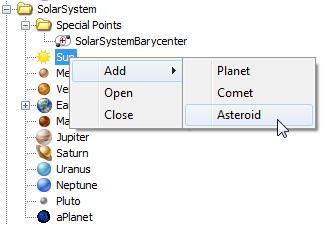
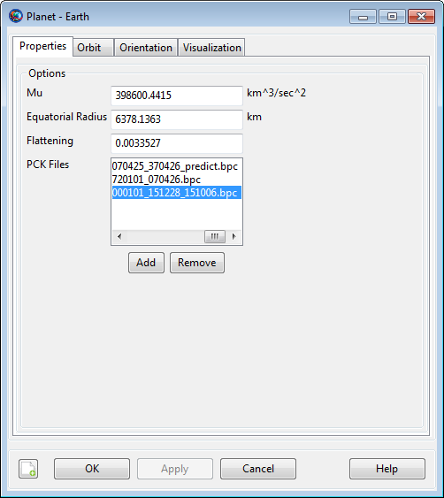
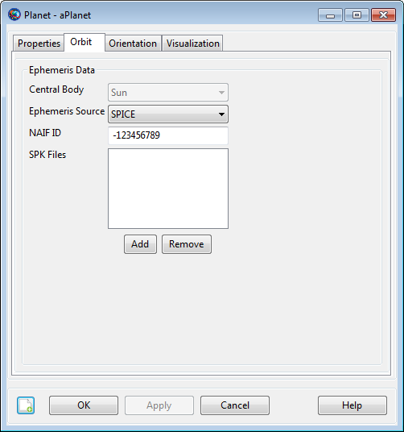
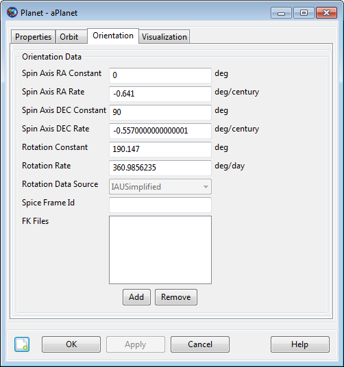

CelestialBody
CelestialBody — A celestial body model
Description
The CelestialBody resource is a model of a celestial body containing settings for the physical properties, as well as the models for the orbital motion and orientation. GMAT contains built-in models for the Sun, the 8 planets, Earth's moon, and Pluto. You can create a custom CelestialBody resource to model a planet, asteroid, comet, or moon. This resource cannot be modified in the Mission Sequence.
See Also: SolarSystem, Barycenter, LibrationPoint, CoordinateSystem, Color
Fields
| Field | Description | ||||||||||||
|---|---|---|---|---|---|---|---|---|---|---|---|---|---|
| 3DModelFile | Allows you to load 3D models for your celestial body. Models must be in .3ds model formats.
| ||||||||||||
| 3DModelOffsetX | This field lets you translate a celestial body in +X or -X axis of central body's coordinate system.
| ||||||||||||
| 3DModelOffsetY | This field lets you translate a celestial body in +Y or -Y axis of central body's coordinate system.
| ||||||||||||
| 3DModelOffsetZ | This field lets you translate a celestial body in +Z or -Z axis of central body's coordinate system.
| ||||||||||||
| 3DModelRotationX | Allows you to perform a fixed rotation of a celestial body's attitude w.r.t X-axis of central body's coordinate system.
| ||||||||||||
| 3DModelRotationY | Allows you to perform a fixed rotation of a celestial body's attitude w.r.t Y-axis of central body's coordinate system.
| ||||||||||||
| 3DModelRotationZ | Allows you to perform a fixed rotation of a celestial body's attitude w.r.t Z-axis of central body's coordinate system.
| ||||||||||||
| 3DModelScale | Allows you to apply a scale factor to the celestial body's model size.
| ||||||||||||
| CentralBody | The central body of the celestial body. The central body field is used primarily by the GUI.
| ||||||||||||
| EquatorialRadius | The body's equatorial radius.
| ||||||||||||
| EopFileName | Optional Earth EOP file to use instead of the EOP file defined in the startup file. Note that an emtpy string is the default, and when set to an empty string, the EOP file defined in the GMAT startup file is used. This field is only valid for Earth .
| ||||||||||||
| FileName | Path and/or name of texture map file used in OrbitView graphics.
| ||||||||||||
| Flattening | The body's polar flattening.
| ||||||||||||
| FrameSpiceKernelName | List of SPICE FK files to load for this body. Used to define celestial body properties for use with ContactLocator and EclipseLocator. See Remarks.
| ||||||||||||
| Mu | The body's gravitational parameter.
| ||||||||||||
| NAIFId | NAIF Integer ID for body.
| ||||||||||||
| NutationUpdateInterval | The time interval between updates for Earth nutation matrix. If NutationUpdateInterval = 3600, then GMAT only updates nutation on an hourly basis.
| ||||||||||||
| OrbitColor | Allows you to set available colors on built-in or
user-defined CelestialBody objects that are
drawn on the 3D OrbitView graphics displays.
Colors on a CelestialBody object can be set
through a string or an integer array. For example: Setting a
celestial body's orbit color to red can be done in the following
two ways:
| ||||||||||||
| OrbitSpiceKernelName | List of SPK kernels. Providing emtpy brackets unloads previously loaded kernels.
| ||||||||||||
| OrientationEpoch | The reference epoch for orientation data.
| ||||||||||||
| PlanetarySpiceKernelName | List of SPICE PCK files to load for this body. Used to define celestial body properties for use with ContactLocator and EclipseLocator. See Remarks.
| ||||||||||||
| PosVelSource | The model for user-defined body orbit ephemeredes. GMAT currently only supports a single ephemeris model for custom bodies (SPICE) and this is set using PosVelSource field. The default for PosVelSource is SPICE and it is not necessary to configure this field in the current version of GMAT. This field has no effect for built-in bodies.
| ||||||||||||
| RotationConstant | The body's spin angle at the orientation epoch.
| ||||||||||||
| RotationDataSource | For Earth default is FK5IAU1980, for Luna default is DE405, for selected built in bodies IAU2000, and for selected built in bodies and all user defined bodies, default is IAUSimplified.
| ||||||||||||
| RotationRate | The body's spin rate.
| ||||||||||||
| SpiceFrameId | SPICE ID of body-fixed frame. Used to define celestial body properties for use with ContactLocator and EclipseLocator. See Remarks.
| ||||||||||||
| SpinAxisDECConstant | The declination of the body's spin axis at the orientation epoch.
| ||||||||||||
| SpinAxisDECRate | The rate of change of the body's spin axis declination.
| ||||||||||||
| SpinAxisRAConstant | The right ascension of the body's spin axis at the orientation epoch.
| ||||||||||||
| SpinAxisRARate | The rate of change of the body's right ascension.
| ||||||||||||
| TargetColor | Allows you to set available colors on
CelestialBody object's perturbing orbital
trajectories that are drawn during iterative processes such as
Differential Correction or Optimization. The target color can be
identified through a string or an integer array. For example:
Setting a celestial body's perturbing trajectory color to yellow
can be done in following two ways:
| ||||||||||||
| TextureMapFileName | Allows you to load a texture map file for your celestial body.
|
GUI
The CelestialBody GUI has three tabs that allow you to set the physical properties, orbital properties, and the orientation model. CelestialBody resources can be used in ForceModels, CoordinateSystems, LibrationPoints, and Barycenters, among others. For a built-in CelestialBody, the Orbit and Orientation tabs are largely inactive and the behavior is discussed below. To create a custom Asteroid - as an example of how to create a custom CelestialBody - perform the following steps.
In the Resource Tree, expand the SolarSystem folder.
Right-click Sun and select Add -> Asteroid.
In the New Asteroid dialog box, type the desired name.
|  |
The CelestialBody Properties tab is shown below. GMAT models all bodies as spherical ellipsoids and you can set the Equatorial Radius, Flattening, and Mu (gravitational parameter) on this dialog box, as well as the texture map used in OrbitView graphics displays.
|  |
The CelestialBody Orbit tab is shown below for creating a custom CelestialBody. Settings on this panel are inactive for built-in celestial bodies and the ephemeris for built-in bodies is configured on the SolarSystem dialog. The CentralBody field is populated automatically when the object is created and is always inactive. To configure SPICE ephemerides for a custom body, provide a list of SPK files and the NAIF ID. See the discussion below for more information on configuring SPICE files.
|  |
The CelestialBody Orientation tab is shown below. Most settings on this panel are inactive for built-in celestial bodies and exceptions for the Earth and Earth's moon are described further below. To define the orientation for a celestial body you provide a reference epoch, the initial orientation at the reference epoch, and angular rates. See the discussion below for a more detailed description of the orientation model.
|  |
The Earth and Earth's moon have unique fields to configure their orientation models. The Earth has an extra field called NutationUpdateInterval that can be used when lower fidelity, higher performance simulations are required.
 |
The CelestialBody Visualization tab is shown below for creating a custom CelestialBody. On the visualization tab, you can set data such as 3d model of a celestial body, texture file, translation and rotation of a celestial body on all three axes, scale of the 3D model as well as assign orbit and target colors to the orbit of the body.
 |
Remarks
Celestial body orientation model
The orientation of built-in celestial bodies is modeled using high fidelity theories on a per-body basis. The orientation of Earth is modeled using IAU-1976/FK5. The orientation of the Moon is modeled using lunar librations from the DE405 file. The remaining built-in celestial body orientations are modeled using data published by the IAU/IAG in "Report of the IAU/IAG Working Group on Cartographic Coordinates and Rotational Elements of the Planets and Satellites: 2000".
The orientation of a custom CelestialBody is modeled by providing three angles and their rates based on IAU/IAG conventions. The figure below illustrates the angles. The angles αo, δo, and W, are respectively the SpinAxisRAConstant, SpinAxisDECConstant, and RotationConstant. The angular rates are respectively SpinAxisRARate, SpinAxisDECRate, and RotationRate. All angles are referenced to the X-Y plane of the ICRF axis system. The constant values SpinAxisRAConstant, SpinAxisDECConstant, and RotationConstant are defined to be the values at the epoch defined in OrientationEpoch.
 |
Below is an example illustrating how to configure a CelestialBody according to the IAU 2006 recommended values for Vesta. Note the orientation epoch typically used by the IAU is 01 Jan 2000 12:00:00.00.000 TDB and this must be converted to A1ModJulian which can easily be performed using the Spacecraft Orbit dialog box.
Create Asteroid Vesta
Vesta.CentralBody = Sun
% Note that currently the only available
% format for OrientationEpoch is A1ModJulian
Vesta.OrientationEpoch = 21544.99962789878
Vesta.SpinAxisRAConstant = 301.9
Vesta.SpinAxisRARate = 0.9
Vesta.SpinAxisDECConstant = 90.9
Vesta.SpinAxisDECRate = 0.0
Vesta.RotationConstant = 292.9
Vesta.RotationRate = 1617.332776Note: The orientation models available for Earth and Luna have additional fields for configuration. Earth has an additional field called NutationUpdateInterval that controls the update frequency for the Nutation matrix. For high fidelity applications, NutationUpdateInterval should be set to zero. The RotationDataSource field for Earth and Luna defines the theory used for the rotation of those bodies. Currently, only FK5IAU1980 and DE405 are available for Earth and Luna respectively and the field is displayed for information purposes only. Future versions of GMAT will support DE421 for Luna and IAU-2000A theory for Earth.
Setting colors on orbits of celestial bodies
GMAT allows you to assign colors to orbits of celestial bodies that are drawn in the OrbitView graphics display windows. GMAT also allows you to assign colors to perturbing celestial body orbital trajectories drawn during iterative processes such as differential correction or optimization. The CelestialBody object's OrbitColor and TargetColor fields are used to assign colors to both orbital and perturbing trajectories. See the Fields section for description of these two fields. Also see Color documentation for discussion and examples on how to set colors on a celestial body.
Configuring orbit ephemerides
The ephemerides for built-in celestial bodies is specified by the SolarSystem.EphemerisSource field and the same source is used for all built-in bodies. Ephemerides for a custom CelestialBody are provided by SPICE files. Archives of available SPICE files can be found at the JPL NAIF site and the Solar System Dynamics site . JPL provides utilities to create custom SPICE files in the event existing kernels don't satisfy requirements for your application. To create custom SPICE kernels, see the documentation provided by JPL. The list of NAIF Ids for celestial bodies is located here.
Note that the DE files model the barycenter of planetary systems. So for Jupiter, when using DE405 for example, you are modeling Jupiter's location as the barycenter of the Jovian system. SPICE kernels differentiate the barycenter of a planetary system from the location of the individual bodies. So when using SPICE to model Jupiter, you are modeling the location of Jupiter using Jupiter's center of mass.
To specify the SPICE kernels for a custom CelestialBody, use the NAIFId, CentralBody, and SourceFileName fields. GMAT is distributed with an SPK file for CERES which has NAIF ID 2000001. Here is how to configure a CelestialBody to use the CERES SPICE ephemeris data.
Create CelestialBody Ceres
Ceres.CentralBody = Sun
Ceres.SourceFilename = '../data/planetary_ephem/spk/ceres_1900_2100.bsp'Note: GMAT currently only supports a single ephemeris model for custom bodies (SPICE) and this is set using PosVelSource field. The default for PosVelSource is SPICE and it is not necessary to configure this field in the current version of GMAT.
Warning
NAIF distributes SPICE kernels for many celestial bodies and each kernel is consistent with a particular primary ephemeris release such as DE421. For high precision analysis, it is important to ensure that the ephemerides used for a custom celestial body are consistent with the ephemeris source selection in the SolarSystem.EphemerisSource field. SPICE kernels are typically distributed with a ".cmt" file and in that file the line that contains the ephemeris model looks like this:
Planetary Ephemeris Number:
DE-0421/LE-0421
Configuring physical properties
GMAT models all celestial bodies as spherical ellipsoids. To define the physical properties use the Flattening, EquatorialRadius, and Mu fields.
Configuring for event location
GMAT's event location subsystem (consisting of ContactLocator and EclipseLocator) uses celestial body definitions from the SPICE toolkit. Properites such as radius, flattening, ephemeris, and orientation must be configured separately for use with the event locators.
CelestialBody shape and orientation are configured via SPICE PCK files, loaded from two sources in the following order:
SolarSystem.PCKFilename
Sun.PlanetarySpiceKernelName (in list order), followed by Mercury, Venus, Earth, Mars, Jupiter, Saturn, Uranus, Neptune, Pluto, Luna
User-defined bodies
Data loaded last takes precedence over data loaded first, if there
is a conflict. Note that because the SPICE kernel pool is shared for the
entire run, a PCK file loaded for Pluto may
override data loaded by Sun, if the file contains
conflicting data. Note that this order isn't absolute—coordinate systems
that with an SPK-defined origin load differently, for example. To
determine the exact load order, see the GmatLog.txt
file.
Note
GMAT's SPICE kernel load order is based on many factors, and can
be unpredictable. Therefore, it is important that the kernels
referenced by a mission be consistent. For example, NAIF's
de421.bsp and mar085.bsp are
consistent, because they are both based on the DE421 model.
Inconsistent kernels can cause unpredictable behavior based on the
order in which they are loaded.
The body-fixed frame for a CelestialBody is defined on the Orientation tab by the SpiceFrameId and SpiceFrameKernelFile fields. The SpiceFrameId contains the SPICE ID for the body-fixed frame, which may be built-in or defined via external FK files. External FK files can be loaded by adding them to the SpiceFrameKernelFile list for each body. These files are loaded just after PlanetarySpiceKernelName for each body. The list of built-in frames is available as an appendix in the SPICE documentation. GMAT's default frames are:
Earth:
ITRF93Luna:
MOON_PAOther default bodies:
IAU_CelestialBody
The Earth ITRF93 frame is defined by three high-fidelity
orientation PCK files, shown below. More information on these files can
be found in the NAIF aareadme.txt
file.
earth_: long-term low-fidelity EOP predictionsstart_end_predict.bpcearth_: long-term low-fidelity historical EOPstart_end.bpcearth_: near-term high-fidelity EOP history and predictionsstart_end_filedate.bpc
The Luna MOON_PA frame is defined by an orientation PCK file and a
frame-defining FK file, shown below. More information can be found in
the NAIF PCK aareadme.txt
file and the FK aareadme.txt
file. Other versions of the MOON_PA frame are available from
NAIF.
moon_pa_de421_1900-2050.bpc: Moon orientation consistent with DE421 PA framemoon_080317.tf: MOON_PA frame definition
Examples
Configure a CelestialBody to model Saturn's
moon Titan. Note you must obtain the SPICE kernel named
"sat288.bsp" from here
and place it in the directory identified in the script snippet
below
Create Moon Titan
Titan.NAIFId = 606
Titan.OrbitSpiceKernelName = { ...
'../data/planetary_ephem/spk/sat288.bsp' ...
}
Titan.SpiceFrameId = 'IAU_TITAN'
Titan.EquatorialRadius = 2575
Titan.Flattening = 0
Titan.Mu = 8978.5215
Titan.PosVelSource = 'SPICE'
Titan.CentralBody = 'Saturn'
Titan.RotationDataSource = 'IAUSimplified'
Titan.OrientationEpoch = 21545
Titan.SpinAxisRAConstant = 36.41
Titan.SpinAxisRARate = -0.036
Titan.SpinAxisDECConstant = 83.94
Titan.SpinAxisDECRate = -0.004
Titan.RotationConstant = 189.64
Titan.RotationRate = 22.5769768